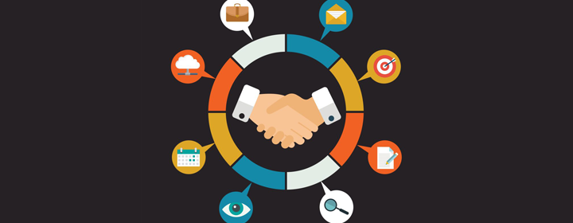

LA ASOCIACIÓN
Creado en 2015 por cuatros jóvenes para un trabajo de sociología, la asociación continúa a ayudar las personas mayores a reconectarse con el mundo numérico. Es más de 60% de los ancianos que no utilizan el numérico o que no saben como funciona un ordenador. En 2020 son veinte jóvenes que ayudan para la inclusión numérica y no perder el contaco con los jóvenes y el tiempo.
CyberM@yores "reconectarse con su época"

HABILIDADES
- Amistoso
- Bondadoso
- Competente

EQUIPO
- Ordenadores y periféricos
- Sala de ayuntamiento